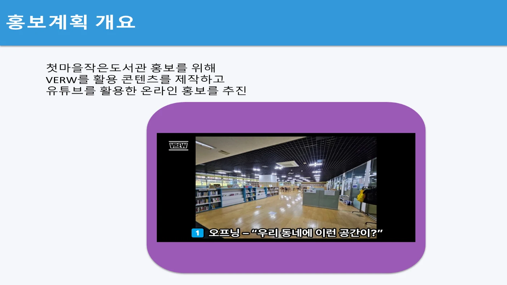
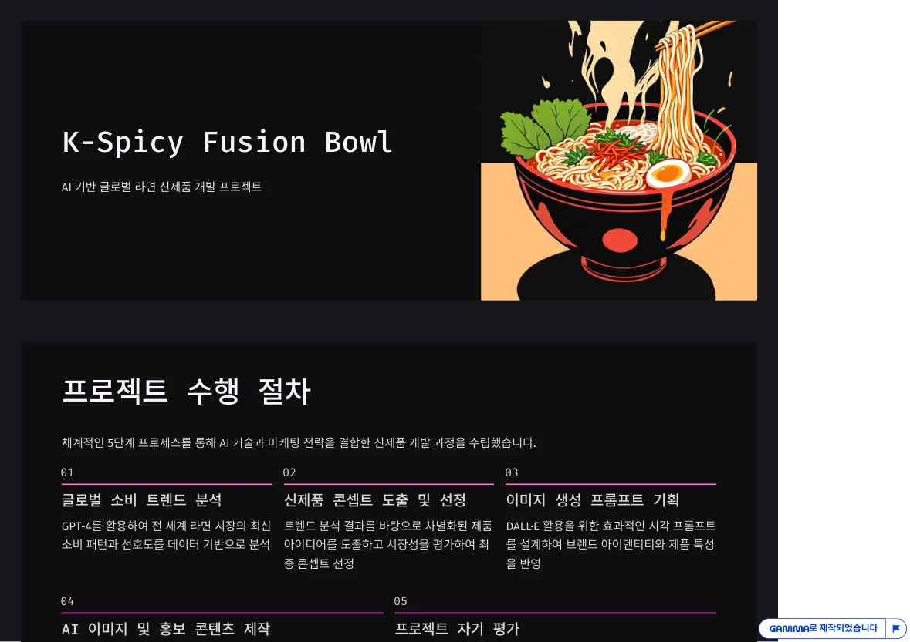
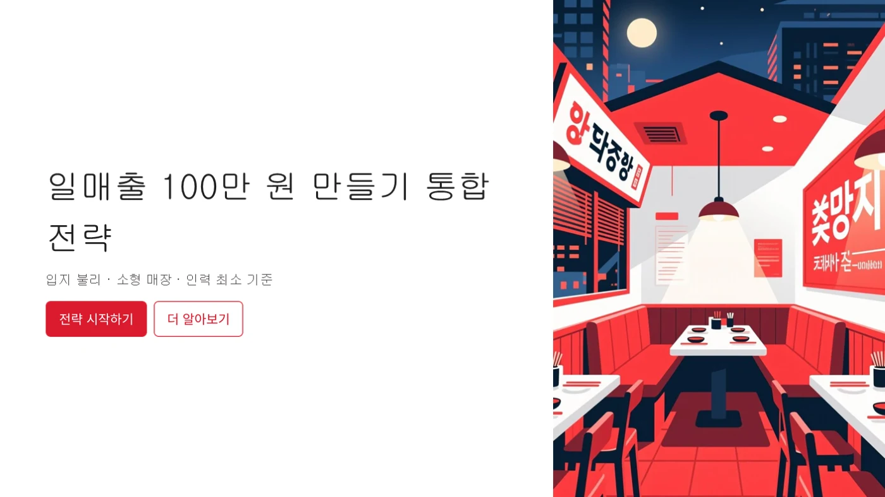
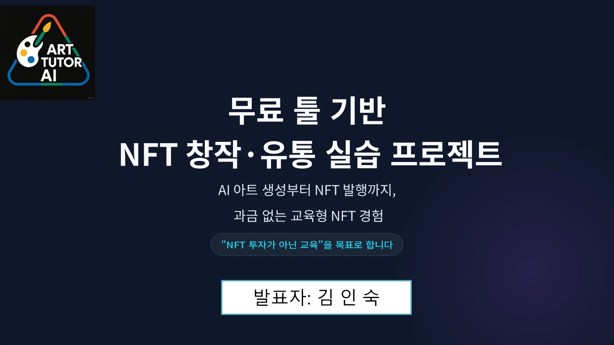
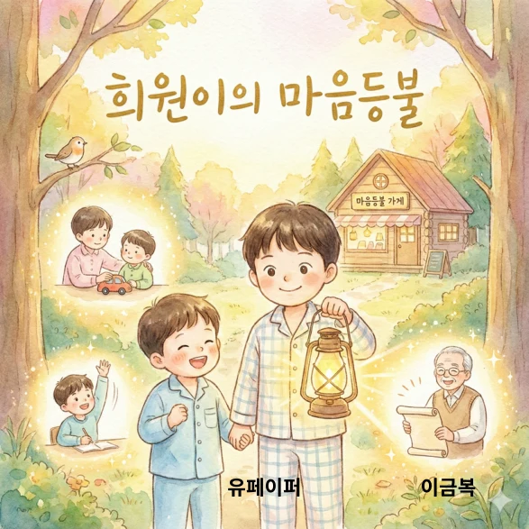
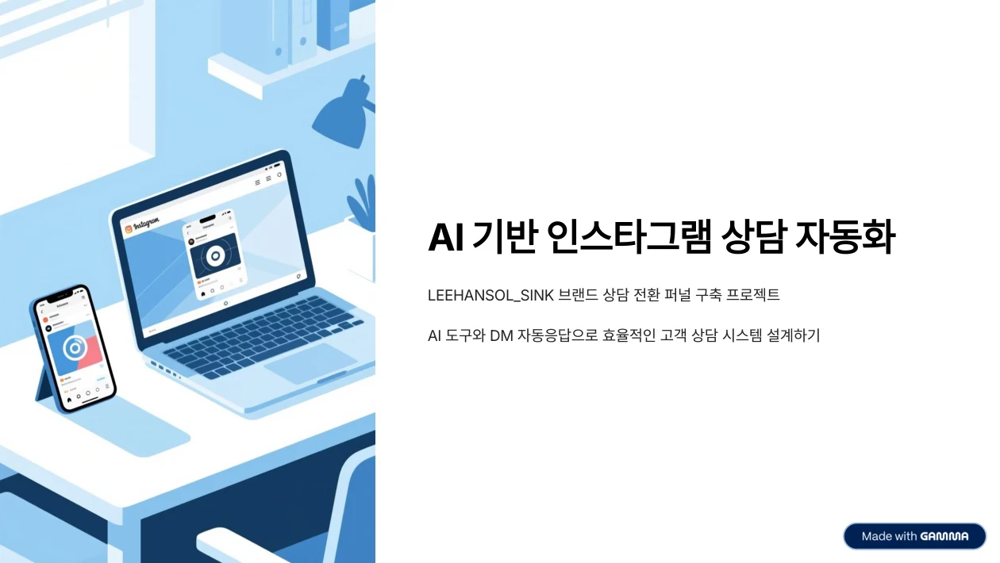
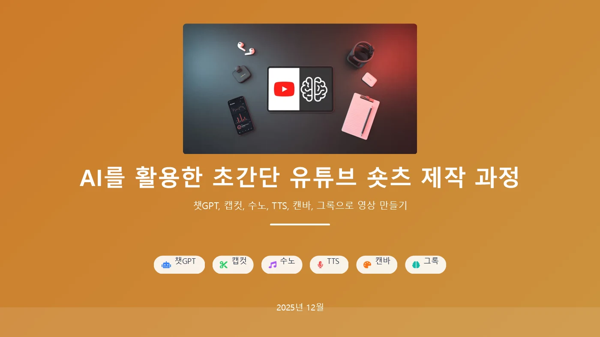

LEARNER PROJECTS / SEJONG / 2025
각자의 일상에서 찾은
아홉 가지 AI 프로젝트
도서관 안내, 라면 기획, 동화책과 농장 기록까지. 배운 도구를 자신의 관심사와 업무에 연결한 교육생들의 작업입니다.
같은 수업을 들었어도 풀고 싶은 문제는 달랐습니다. 교육생들은 주제를 정하고, AI와 자료를 살피고, 글·이미지·영상·웹의 형태로 생각을 구체화했습니다.
지역 공간 · 안내 영상
첫마을작은도서관을 영상으로 안내하다
교육생 · 김두현

- 이용자 관점
- 공간 소개
- Vrew 편집
- 유튜브 공유
도서관을 처음 찾는 주민이 공간과 이용 방법을 쉽게 이해하도록 안내 영상을 기획했습니다. 현장을 소개하는 장면에 설명을 더하고, Vrew로 편집한 콘텐츠를 유튜브에 공유하는 흐름입니다.
발표자료는 공간 소개와 온라인 홍보를 함께 다룹니다. AI 도구의 기능을 익히는 데서 한 걸음 더 나아가, 지역의 실제 장소를 누구에게 어떻게 알릴지 생각한 프로젝트입니다.
홍보계획 발표자료와 「첫마을작은도서관홍보」 영상이 남아 있습니다.
제품 기획 · 이미지 · 릴스
K-Spicy Fusion Bowl · 가상의 라면 신제품
교육생 · 김성현

- 소비자 조사
- 콘셉트 선택
- 제품 이미지
- 홍보 콘텐츠
미국·유럽의 젊은 소비자를 대상으로 가상의 라면을 기획했습니다. AI에 시장 분석가, 기획자, 마케팅 담당자 역할을 나누어 부여하고, 조사에서 콘셉트 선정과 패키지 이미지 제작까지 연결했습니다.
최종 발표에는 한국의 매운맛과 서양 식재료를 조합한 K-Spicy Fusion Bowl이 담겼습니다. 실제 출시 제품이 아닌 교육용 콘셉트이며, 이미지와 홍보 문구가 하나의 제품 이야기로 이어지도록 구성한 작업입니다.
신제품 기획 발표자료와 인스타그램 릴스 링크가 제출됐습니다.
소상공인 · 사업 전략
작은 가게의 매출을 숫자로 설계하다
교육생 · 김승준

- 운영 조건
- 메뉴·가격
- 매출 계산
- 홍보 전략
유동 인구가 적은 입지, 작은 매장, 적은 인력이라는 조건에서 음식점 운영 전략을 세웠습니다. 생성형 AI로 브랜드와 메뉴 아이디어를 정리하고, 좌석 수·객단가·회전율을 바탕으로 목표 매출을 계산했습니다.
발표자료는 점심과 저녁의 역할을 나누어 매출 시나리오를 제시합니다. 제목의 ‘일매출 100만 원’은 사업 계획의 목표값입니다. 실제 매출 성과가 아니라, 가정을 숫자로 검토하는 학습 사례로 소개합니다.
사업 전략 발표자료와 블로그 산출물이 제출됐습니다.
디지털 아트 · 교육 콘텐츠
ART TUTOR AI · 디지털 창작과 유통의 구조
교육생 · 김인숙

- 이미지 창작
- 작품 편집
- 유통 구조 이해
- 설명 영상
AI로 디지털 미술품을 만들고, 파일 정리와 유통 과정을 학습하는 교육형 프로젝트입니다. 발표자료는 이미지 제작·편집과 디지털 지갑·NFT 발행 절차를 하나의 실습 흐름으로 설명합니다.
‘ART TUTOR AI’ 소개 영상과 발표를 통해 창작 도구의 사용법을 교육 콘텐츠로 정리했습니다. 작품을 만드는 경험과 작품이 유통되는 구조를 이해하는 경험을 함께 다룬 사례입니다.
발표자료와 소개 영상 기준으로 정리했습니다. 상용 플랫폼의 결제·거래 운영 실적을 뜻하지 않습니다.
글쓰기 · 삽화 · 전자책
희원이의 마음등불 · 나만의 동화책
교육생 · 이금복

- 이야기 구성
- 장면별 삽화
- Canva 편집
- 동화책 PDF
유아·초등 저학년 독자를 생각하며 이야기와 그림을 함께 만들었습니다. ChatGPT로 줄거리를 구성하고 문장을 다듬은 뒤, Gemini로 삽화를 만들고 Canva에서 페이지를 편집하는 방식입니다.
완성된 PDF는 자존감을 주제로 한 「희원이의 마음등불」입니다. 계획 단계의 짧은 동화 구상이 표지와 본문을 갖춘 책으로 발전했습니다. 독자의 눈높이에 맞는 문장과 장면 사이의 일관성을 고민한 창작 프로젝트입니다.
표지와 본문을 갖춘 22페이지 PDF가 확인됩니다. 유통·판매 실적은 이 글의 범위에 포함하지 않습니다.
농업 · 기록 자동화
농장집사 · 말로 남기는 영농 기록
교육생 · 장미훈
- 음성·텍스트
- 항목 구조화
- 시트 기록
- 대시보드
농작업 중 손을 쓰기 어려운 상황에서 말로 기록을 남길 수 있도록 기획한 프로젝트입니다. 자유로운 문장을 구역·작업·자재·병해충 등의 항목으로 정리하고, 하나의 기록 원장으로 모으는 구조를 설계했습니다.
계획서에는 Gemini API, Google Apps Script, Google Sheets를 연결하는 방법이 담겨 있습니다. 필수 정보가 빠지면 다시 질문하고, 원문과 변경 이력을 보관하도록 구상한 점이 특징입니다.
계획서와 제출 당시 웹앱 링크가 있습니다. 현재 웹앱의 동작과 장기 데이터 축적 효과는 확인하지 않았습니다.
브랜드 운영 · 상담 자동화
싱크볼 교체 상담을 표준화하다
교육생 · 이한솔

- 콘텐츠 노출
- DM 문의
- 체크리스트
- 상담 연결
LEEHANSOL_SINK 브랜드의 반복 상담을 줄이기 위해, 고객에게 필요한 정보를 먼저 안내하는 흐름을 설계했습니다. 지역, 치수, 상판, 배수 위치, 사진 등 상담 정보를 체크리스트로 정리하고 Canva 이미지로 전달하는 구상입니다.
AI 콘텐츠에서 인스타그램 DM, 정보 수집, 상담으로 이어지는 과정을 발표자료에 담았습니다. 키워드 응답과 FAQ를 활용하는 설계이며, 홍보와 고객 응대를 하나의 업무로 연결한 사례입니다.
프로젝트 계획서·발표 PDF·인스타그램 게시물 링크가 남아 있습니다. 현재 자동응답 운영 상태나 전환율 개선은 검증하지 않았습니다.
제품 브랜딩 · 기획
타이벡 티코스터의 가치를 전달하는 SNS 기획
교육생 · 박혜경
- 제품 특성
- 고객 설정
- 콘텐츠 기획
- 브랜드 표현
타이벡 소재 티코스터를 주제로 고객, 브랜드 콘셉트, 시각 콘텐츠와 SNS 운영 방향을 정리했습니다. 제품의 특성을 소비자가 이해할 수 있는 메시지와 이미지로 바꾸는 마케팅 기획 과제입니다.
계획서는 콘텐츠 제작, 카피라이팅, 해시태그, 디자인 방향과 역할을 나누어 설명합니다. 제품 소개에 필요한 여러 작업을 하나의 실행 계획으로 묶은 사례로 소개합니다.
프로젝트 계획서를 확인했습니다. 최종 산출물 링크는 제출 목록에 없어 기획 단계로 표시합니다.
홍보 영상 · 숏츠
아이디어를 짧은 영상으로 완성하다
교육생 · 김미소

- 주제·스크립트
- 음성·음악
- 이미지·편집
- 숏츠 공유
짧은 영상의 아이디어를 찾고 대본, 내레이션, 음악, 시각 자료와 편집을 연결했습니다. 발표자료에는 ChatGPT, Grok, TTS, Suno, Canva, CapCut을 용도에 따라 나누어 사용하는 제작 과정이 담겨 있습니다.
첫 장면에서 관심을 끄는 방법, 짧은 시간 안에 메시지를 전달하는 방법, 세로 화면에 맞는 편집을 함께 고민했습니다. 한 번의 생성 결과를 여러 도구로 다듬어 공개 가능한 영상으로 정리한 작업입니다.
숏츠 링크와 제작 과정 발표자료가 확인됩니다. 같은 링크가 별도 이름 행에도 중복되어 있어 작품은 한 번만 소개합니다.
LEARNING BY MAKING
도구를 고르는 기준은 만들고 싶은 결과물
이번 프로젝트는 AI의 기능 목록을 외우는 대신, 필요한 결과물을 먼저 정하고 그에 맞는 도구를 연결한 경험입니다. 문장을 고치고, 이미지를 다시 만들고, 화면과 발표를 정리하는 반복 속에서 각자의 사용법이 만들어졌습니다.
함께 보는 교육 자료
이미지는 교육생의 발표자료와 산출물에서 가져왔습니다. 외부 작업물은 작성자의 공개 설정이나 서비스 상태에 따라 로그인이 필요할 수 있습니다.